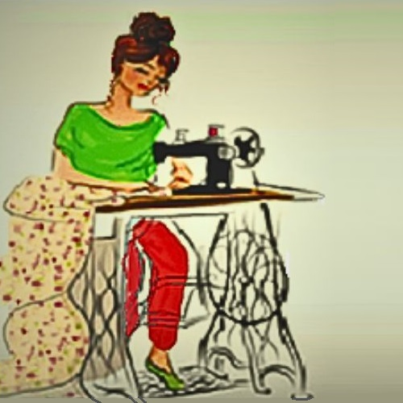

Prijslijst
Kledingreparaties & Aanpassingen
(Kleren op maat — definitieve prijs afhankelijk van stof, complexiteit en afwerking)
BROEKEN & ROKKEN
- Zoom van broek inkorten €10 — met originele zoom €15
- Zoom kostuumbroek met stootband €18
- Broekspijpen versmallen €10 — verbreden €20
- Handwerk — rekbare stof met voering €20
- Rok inkorten €12 — met voering €14 — met split €16
- Taille versmallen €15 — met voering €20
- Taille verbreden €20 — met voering €25
- Taille elastiek vervangen €12
- Nieuwe broekzak per stuk €12 — reparatie €5
- Nieuwe rits €15
JURK & GALAJURK
- Verkorten €12 — met voering €14
- Vermallen €15 — met voering €18
- Vermallen met nieuwe rits €18 t.e.m. 20 cm
- Knoopsluiting dichtnaaien €5
- Mouwen verkorten €10 — met voering €15
- Mouwen met split €15 — met voering €20
- Schouderbanden inkorten €8
- Avondjurk inkorten vanaf €25 — met voering €35
- Delicate stoffen (chiffon/satijn) €45–€55
- Meerdere lagen, kant of kralen €70
- Taille aanpassen vanaf €30
- Mouwaanpassingen (korter/langer) €30 of mouwen toevoegen €80
- Borstlijn aanpassen vanaf €25 tot €50
KLEDING OP MAAT
afhankelijk van het ontwerp en de gebruikte stoffen
- Overhemden/Bloesen vanaf €50 – €150
- Jurken vanaf €100 – €500
- Maatwerk pakken/suites vanaf €250 – €1000
- Broeken vanaf €80 – €250
- Eenvoudige rok (A-lijn, kokerrok) €50
- — Standaard stoffen (katoen, polyester enz.)
- — Luxe stoffen (zijde, wol, linnen) €100
- Borduursels of extra versieringen vanaf €10 tot €50
HEMDEN & BLOEZEN
- Zoom inkorten €10 — met voering €15
- Handwerk/rekbare stof €15
- Versmallen €15 — verbreden €20 (excl. stofprijs)
- Mouwen inkorten €10 — met voering €15
- Fantasie mouwen aanpassing €30
- Reparatie kraag €8
- Knopen aanzetten (niet inbegrepen) per stuk €2,50
VESTEN & JASSEN
- Zoom inkorten — met voering €20
- Versmallen zijkanten €25 — achterste naad €18
- Verbreden — met voering €30 excl. nieuwe stof
- Mouwen inkorten €15 — met voering €20
- — met fantasie (moeilijke uitvoering) €25
- — inkorten met split — met voering €35
- Nieuwe rits tot 50cm €20 excl. rits — langer dan 50cm €25
- — met moeilijke uitvoering €50
- Nieuwe jaszak per stuk €12 — repareren €6
- 2× elleboogstukken €15
- Voering repareren / naad herstellen €6
- Knoopsgat €3,50 — aanzetten €2,50 excl. knopen
GORDIJN & KUSSEN
- Stofherstel (scheuren) vanaf €10
- Vervangen voering vanaf €20 per gordijn
- Vervangen haken/ringen vanaf €5
- Verstellen van lengte vanaf €15 per gordijn
- Standaard kussen (40×40 cm) vanaf €15 – €40
- Luxe stoffen (fluweel, linnen) vanaf €20 – €80
- Decoratieve kussens (prints/borduurwerk) vanaf €30
- Vulling vanaf €5 tot €20
CREATIVE TOETS
- Schilderen op kleding begint €5 – €55
- Met hand borduren op kleding begint €5 – €55
- Bloemen van vilt begint €5 – €35
⏳ Wachttijd: 2–10 dagen (afhankelijk van de opdracht en materiaalbeschikbaarheid) · 🚗 Aan huis mogelijk: met kilometervergoeding · 📅 Enkel op afspraak · 💳 Betaling: cash, Bancontact · BTW BE 0871 261 918